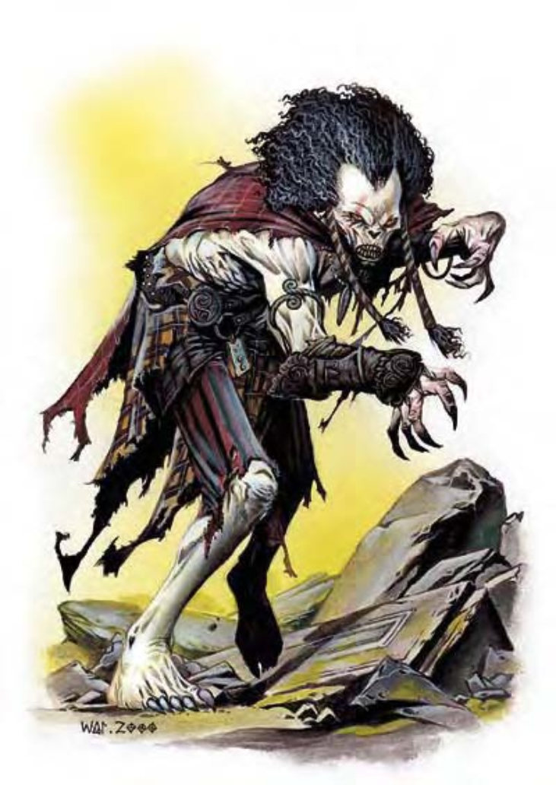

| 资料栏位 | 尸妖 (Wight) 中型不死生物 |
| 生命骰 | 4d12 (26HP) |
| 先攻 | +1 |
| 速度 | 30英尺 (6格) |
| 防御等级 | 15 (+1敏捷、+4天生)、接触11、措手不及14 |
| 基本攻击/擒抱 | +2 / +3 |
| 攻击 | 挥击+3近战 (1d4+1附加吸能) |
| 全力攻击 | 挥击+3近战 (1d4+1附加吸能) |
| 占据/触及 | 5英尺 / 5英尺 |
| 特殊攻击 | 产生衍体、吸能 |
| 特殊能力 | 黑暗视觉60英尺、不死特性 |
| 豁免 | 强韧+1、反射+2、意志+5 |
| 属性 | 力量12、敏捷12、体质―、智力11、感知13、魅力15 |
| 技能 | 躲藏+8、聆听+7、潜行+16、侦察+7 |
| 专长 | 警觉、盲战 |
| 环境 | 任何 |
| 组织 | 单独、成双、成队 (3-5) 或一批 (6-11) |
| 挑战级数 | 3 |
| 宝藏 | 无 |
| 阵营 | 总是守序邪恶 |
| 进化 | 5-8HD (中型) |
| 等级修正值 | ― |
尸妖外型就像一具人类尸体，但眼神狂乱，燃烧着熊熊恶意。皮肤干燥肌肉萎缩，像是风干过一样紧紧贴在骨骼上，牙齿则长得又尖又长，像一整排锋利的针。
尸妖属于不死生物，因为惨死或憎恨而半死不活地留在人世间。尸妖的特征和生前有相似之处，但往往极为扭曲恐怖。
尸妖常出没于乱葬岗、墓穴或是其他充满死亡气息的地方，对活物的愤恨与日俱增。他们一心只想毁灭所有生命，让受害者尸横遍野，全世界充斥他们的子嗣。
尸妖的身高体重都和人类相近。
尸妖通晓通用语。
战斗尸妖会用拳头猛力挥击对手。
产生衍体 (超自然)：被尸妖杀害的人形生物在1d4天后会成为尸妖，受到创造它的尸妖控制，至死方休。他们并不具有任何生前的能力。
吸能 (超自然)：被尸妖的挥击击中的活物会得到1个负向等级。移除负向等级的强韧检定DC=14，豁免检定DC的调整值与魅力调整值相同。每造成1个负向等级，尸妖获得5点暂时生命值。
技能：尸妖在进行“潜行”检定时具有+8种族加值。